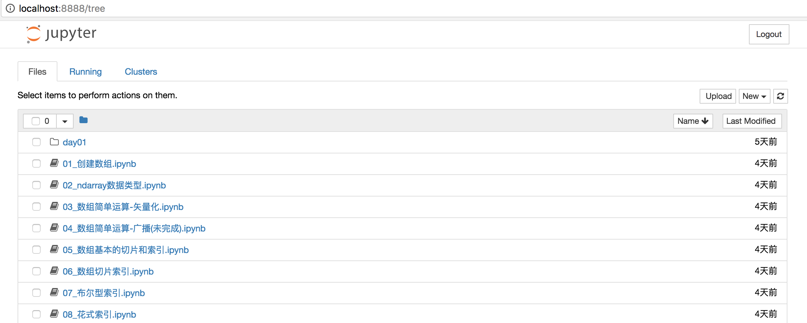

<!DOCTYPE HTML>
<html lang="en" >
    
    <head>
        
        <meta charset="UTF-8">
        <meta http-equiv="X-UA-Compatible" content="IE=edge" />
        <title>jupyter notebook | Linkedln：2016年中国互联网最热职位人才库报告</title>
        <meta content="text/html; charset=utf-8" http-equiv="Content-Type">
        <meta name="description" content="">
        <meta name="generator" content="GitBook 2.6.7">
        
        
        <meta name="HandheldFriendly" content="true"/>
        <meta name="viewport" content="width=device-width, initial-scale=1, user-scalable=no">
        <meta name="apple-mobile-web-app-capable" content="yes">
        <meta name="apple-mobile-web-app-status-bar-style" content="black">
        <link rel="apple-touch-icon-precomposed" sizes="152x152" href="../gitbook/images/apple-touch-icon-precomposed-152.png">
        <link rel="shortcut icon" href="../gitbook/images/favicon.ico" type="image/x-icon">
        
    <link rel="stylesheet" href="../gitbook/style.css">
    
        
        <link rel="stylesheet" href="../gitbook/plugins/gitbook-plugin-highlight/website.css">
        
    
        
        <link rel="stylesheet" href="../gitbook/plugins/gitbook-plugin-search/search.css">
        
    
        
        <link rel="stylesheet" href="../gitbook/plugins/gitbook-plugin-fontsettings/website.css">
        
    
    

        
    
    
    <link rel="next" href="../part02/2_Numpy.html" />
    
    
    <link rel="prev" href="../part01/1.1_Python数据分析.html" />
    

        
    </head>
    <body>
        
        
    <div class="book"
        data-level="1.2"
        data-chapter-title="jupyter notebook"
        data-filepath="part01/1.2_jupyper_notebook.md"
        data-basepath=".."
        data-revision="Thu Dec 14 2017 23:24:20 GMT+0800 (CST)"
        data-innerlanguage="">
    

<div class="book-summary">
    <nav role="navigation">
        <ul class="summary">
            
            
            
            

            

            
    
        <li class="chapter " data-level="0" data-path="index.html">
            
                
                    <a href="../index.html">
                
                        <i class="fa fa-check"></i>
                        
                        数据分析
                    </a>
            
            
        </li>
    
        <li class="chapter " data-level="1" data-path="part01/1_数据分析概述.html">
            
                
                    <a href="../part01/1_数据分析概述.html">
                
                        <i class="fa fa-check"></i>
                        
                            <b>1.</b>
                        
                        数据分析概述
                    </a>
            
            
            <ul class="articles">
                
    
        <li class="chapter " data-level="1.1" data-path="part01/1.1_Python数据分析.html">
            
                
                    <a href="../part01/1.1_Python数据分析.html">
                
                        <i class="fa fa-check"></i>
                        
                            <b>1.1.</b>
                        
                        Python数据分析
                    </a>
            
            
        </li>
    
        <li class="chapter active" data-level="1.2" data-path="part01/1.2_jupyper_notebook.html">
            
                
                    <a href="../part01/1.2_jupyper_notebook.html">
                
                        <i class="fa fa-check"></i>
                        
                            <b>1.2.</b>
                        
                        jupyter notebook
                    </a>
            
            
        </li>
    

            </ul>
            
        </li>
    
        <li class="chapter " data-level="2" data-path="part02/2_Numpy.html">
            
                
                    <a href="../part02/2_Numpy.html">
                
                        <i class="fa fa-check"></i>
                        
                            <b>2.</b>
                        
                        Numpy
                    </a>
            
            
            <ul class="articles">
                
    
        <li class="chapter " data-level="2.1" data-path="part02/2.1_创建数组.html">
            
                
                    <a href="../part02/2.1_创建数组.html">
                
                        <i class="fa fa-check"></i>
                        
                            <b>2.1.</b>
                        
                        创建数组
                    </a>
            
            
        </li>
    
        <li class="chapter " data-level="2.2" data-path="part02/2.2_数据类型.html">
            
                
                    <a href="../part02/2.2_数据类型.html">
                
                        <i class="fa fa-check"></i>
                        
                            <b>2.2.</b>
                        
                        数据类型
                    </a>
            
            
        </li>
    
        <li class="chapter " data-level="2.3" data-path="part02/2.3_数组运算.html">
            
                
                    <a href="../part02/2.3_数组运算.html">
                
                        <i class="fa fa-check"></i>
                        
                            <b>2.3.</b>
                        
                        数组运算
                    </a>
            
            
        </li>
    
        <li class="chapter " data-level="2.4" data-path="part02/2.4_数组索引和切片.html">
            
                
                    <a href="../part02/2.4_数组索引和切片.html">
                
                        <i class="fa fa-check"></i>
                        
                            <b>2.4.</b>
                        
                        数组索引和切片
                    </a>
            
            
        </li>
    
        <li class="chapter " data-level="2.5" data-path="part02/2.5_数组函数.html">
            
                
                    <a href="../part02/2.5_数组函数.html">
                
                        <i class="fa fa-check"></i>
                        
                            <b>2.5.</b>
                        
                        数组函数
                    </a>
            
            
            <ul class="articles">
                
    
        <li class="chapter " data-level="2.5.1" data-path="part02/2.5.1_通用元素级数组函数.html">
            
                
                    <a href="../part02/2.5.1_通用元素级数组函数.html">
                
                        <i class="fa fa-check"></i>
                        
                            <b>2.5.1.</b>
                        
                        通用元素级数组函数
                    </a>
            
            
        </li>
    
        <li class="chapter " data-level="2.5.2" data-path="part02/2.5.2_数组统计函数.html">
            
                
                    <a href="../part02/2.5.2_数组统计函数.html">
                
                        <i class="fa fa-check"></i>
                        
                            <b>2.5.2.</b>
                        
                        数组统计函数
                    </a>
            
            
        </li>
    
        <li class="chapter " data-level="2.5.3" data-path="part02/2.5.3_all和any函数.html">
            
                
                    <a href="../part02/2.5.3_all和any函数.html">
                
                        <i class="fa fa-check"></i>
                        
                            <b>2.5.3.</b>
                        
                        all和any函数
                    </a>
            
            
        </li>
    
        <li class="chapter " data-level="2.5.4" data-path="part02/2.5.4_添加和删除函数.html">
            
                
                    <a href="../part02/2.5.4_添加和删除函数.html">
                
                        <i class="fa fa-check"></i>
                        
                            <b>2.5.4.</b>
                        
                        添加和删除函数
                    </a>
            
            
        </li>
    
        <li class="chapter " data-level="2.5.5" data-path="part02/2.5.5_唯一化和集合函数.html">
            
                
                    <a href="../part02/2.5.5_唯一化和集合函数.html">
                
                        <i class="fa fa-check"></i>
                        
                            <b>2.5.5.</b>
                        
                        唯一化和集合函数
                    </a>
            
            
        </li>
    
        <li class="chapter " data-level="2.5.6" data-path="part02/2.5.6_随机数生成函数.html">
            
                
                    <a href="../part02/2.5.6_随机数生成函数.html">
                
                        <i class="fa fa-check"></i>
                        
                            <b>2.5.6.</b>
                        
                        随机数生成函数
                    </a>
            
            
        </li>
    
        <li class="chapter " data-level="2.5.7" data-path="part02/2.5.7_数组排序函数.html">
            
                
                    <a href="../part02/2.5.7_数组排序函数.html">
                
                        <i class="fa fa-check"></i>
                        
                            <b>2.5.7.</b>
                        
                        数组排序函数
                    </a>
            
            
        </li>
    

            </ul>
            
        </li>
    
        <li class="chapter " data-level="2.6" data-path="part02/2.6_数组文件输入输出.html">
            
                
                    <a href="../part02/2.6_数组文件输入输出.html">
                
                        <i class="fa fa-check"></i>
                        
                            <b>2.6.</b>
                        
                        数组文件输入输出
                    </a>
            
            
            <ul class="articles">
                
    
        <li class="chapter " data-level="2.6.1" data-path="part02/2.6.1_数组输入和输出.html">
            
                
                    <a href="../part02/2.6.1_数组输入和输出.html">
                
                        <i class="fa fa-check"></i>
                        
                            <b>2.6.1.</b>
                        
                        数组输入和输出
                    </a>
            
            
        </li>
    
        <li class="chapter " data-level="2.6.2" data-path="part02/2.6.2_读写文本文件.html">
            
                
                    <a href="../part02/2.6.2_读写文本文件.html">
                
                        <i class="fa fa-check"></i>
                        
                            <b>2.6.2.</b>
                        
                        读写文本文件
                    </a>
            
            
        </li>
    

            </ul>
            
        </li>
    
        <li class="chapter " data-level="2.7" data-path="part02/2.7_案例_亚洲国家人口数据计算.html">
            
                
                    <a href="../part02/2.7_案例_亚洲国家人口数据计算.html">
                
                        <i class="fa fa-check"></i>
                        
                            <b>2.7.</b>
                        
                        案例_亚洲国家人口数据
                    </a>
            
            
        </li>
    

            </ul>
            
        </li>
    
        <li class="chapter " data-level="3" data-path="part03/3_Pandas.html">
            
                
                    <a href="../part03/3_Pandas.html">
                
                        <i class="fa fa-check"></i>
                        
                            <b>3.</b>
                        
                        Pandas
                    </a>
            
            
            <ul class="articles">
                
    
        <li class="chapter " data-level="3.1" data-path="part03/3.1_Series.html">
            
                
                    <a href="../part03/3.1_Series.html">
                
                        <i class="fa fa-check"></i>
                        
                            <b>3.1.</b>
                        
                        Series
                    </a>
            
            
            <ul class="articles">
                
    
        <li class="chapter " data-level="3.1.1" data-path="part03/3.1.1_Series创建.html">
            
                
                    <a href="../part03/3.1.1_Series创建.html">
                
                        <i class="fa fa-check"></i>
                        
                            <b>3.1.1.</b>
                        
                        Series创建
                    </a>
            
            
        </li>
    
        <li class="chapter " data-level="3.1.2" data-path="part03/3.1.2_Series操作.html">
            
                
                    <a href="../part03/3.1.2_Series操作.html">
                
                        <i class="fa fa-check"></i>
                        
                            <b>3.1.2.</b>
                        
                        Series操作
                    </a>
            
            
        </li>
    
        <li class="chapter " data-level="3.1.3" data-path="part03/3.1.3_了解NaN.html">
            
                
                    <a href="../part03/3.1.3_了解NaN.html">
                
                        <i class="fa fa-check"></i>
                        
                            <b>3.1.3.</b>
                        
                        了解NaN
                    </a>
            
            
        </li>
    

            </ul>
            
        </li>
    
        <li class="chapter " data-level="3.2" data-path="part03/3.2_DataFrame.html">
            
                
                    <a href="../part03/3.2_DataFrame.html">
                
                        <i class="fa fa-check"></i>
                        
                            <b>3.2.</b>
                        
                        DataFrame
                    </a>
            
            
            <ul class="articles">
                
    
        <li class="chapter " data-level="3.2.1" data-path="part03/3.2.1_DataFrame创建.html">
            
                
                    <a href="../part03/3.2.1_DataFrame创建.html">
                
                        <i class="fa fa-check"></i>
                        
                            <b>3.2.1.</b>
                        
                        创建对象
                    </a>
            
            
        </li>
    
        <li class="chapter " data-level="3.2.2" data-path="part03/3.2.2_DataFrame操作.html">
            
                
                    <a href="../part03/3.2.2_DataFrame操作.html">
                
                        <i class="fa fa-check"></i>
                        
                            <b>3.2.2.</b>
                        
                        数据操作
                    </a>
            
            
        </li>
    
        <li class="chapter " data-level="3.2.3" data-path="part03/3.2.3_算数运算和数据对齐.html">
            
                
                    <a href="../part03/3.2.3_算数运算和数据对齐.html">
                
                        <i class="fa fa-check"></i>
                        
                            <b>3.2.3.</b>
                        
                        算数运算和数据对齐
                    </a>
            
            
        </li>
    
        <li class="chapter " data-level="3.2.4" data-path="part03/3.2.4_函数应用-apply函数.html">
            
                
                    <a href="../part03/3.2.4_函数应用-apply函数.html">
                
                        <i class="fa fa-check"></i>
                        
                            <b>3.2.4.</b>
                        
                        函数应用和映射了解NaN
                    </a>
            
            
        </li>
    
        <li class="chapter " data-level="3.2.5" data-path="part03/3.2.5_Pandas排序.html">
            
                
                    <a href="../part03/3.2.5_Pandas排序.html">
                
                        <i class="fa fa-check"></i>
                        
                            <b>3.2.5.</b>
                        
                        Pandas排序
                    </a>
            
            
        </li>
    
        <li class="chapter " data-level="3.2.6" data-path="part03/3.2.6_等级索引和分级.html">
            
                
                    <a href="../part03/3.2.6_等级索引和分级.html">
                
                        <i class="fa fa-check"></i>
                        
                            <b>3.2.6.</b>
                        
                        等级索引和分级
                    </a>
            
            
        </li>
    
        <li class="chapter " data-level="3.2.7" data-path="part03/3.2.7_处理缺失数据.html">
            
                
                    <a href="../part03/3.2.7_处理缺失数据.html">
                
                        <i class="fa fa-check"></i>
                        
                            <b>3.2.7.</b>
                        
                        处理缺失数据
                    </a>
            
            
        </li>
    

            </ul>
            
        </li>
    
        <li class="chapter " data-level="3.3" data-path="part03/3.3_数据准备.html">
            
                
                    <a href="../part03/3.3_数据准备.html">
                
                        <i class="fa fa-check"></i>
                        
                            <b>3.3.</b>
                        
                        数据准备
                    </a>
            
            
            <ul class="articles">
                
    
        <li class="chapter " data-level="3.3.1" data-path="part03/3.3.1_数据组装.html">
            
                
                    <a href="../part03/3.3.1_数据组装.html">
                
                        <i class="fa fa-check"></i>
                        
                            <b>3.3.1.</b>
                        
                        数据组装
                    </a>
            
            
        </li>
    
        <li class="chapter " data-level="3.3.2" data-path="part03/3.3.2_轴向旋转.html">
            
                
                    <a href="../part03/3.3.2_轴向旋转.html">
                
                        <i class="fa fa-check"></i>
                        
                            <b>3.3.2.</b>
                        
                        轴向旋转
                    </a>
            
            
        </li>
    

            </ul>
            
        </li>
    
        <li class="chapter " data-level="3.4" data-path="part03/3.4_数据转换.html">
            
                
                    <a href="../part03/3.4_数据转换.html">
                
                        <i class="fa fa-check"></i>
                        
                            <b>3.4.</b>
                        
                        数据转换
                    </a>
            
            
            <ul class="articles">
                
    
        <li class="chapter " data-level="3.4.1" data-path="part03/3.4.1_删除重复行.html">
            
                
                    <a href="../part03/3.4.1_删除重复行.html">
                
                        <i class="fa fa-check"></i>
                        
                            <b>3.4.1.</b>
                        
                        删除重复行列
                    </a>
            
            
        </li>
    
        <li class="chapter " data-level="3.4.2" data-path="part03/3.4.2_映射.html">
            
                
                    <a href="../part03/3.4.2_映射.html">
                
                        <i class="fa fa-check"></i>
                        
                            <b>3.4.2.</b>
                        
                        映射
                    </a>
            
            
        </li>
    
        <li class="chapter " data-level="3.4.3" data-path="part03/3.4.3_排序-take函数.html">
            
                
                    <a href="../part03/3.4.3_排序-take函数.html">
                
                        <i class="fa fa-check"></i>
                        
                            <b>3.4.3.</b>
                        
                        排序
                    </a>
            
            
        </li>
    

            </ul>
            
        </li>
    
        <li class="chapter " data-level="3.5" data-path="part03/3.5_数据聚合.html">
            
                
                    <a href="../part03/3.5_数据聚合.html">
                
                        <i class="fa fa-check"></i>
                        
                            <b>3.5.</b>
                        
                        数据聚合
                    </a>
            
            
            <ul class="articles">
                
    
        <li class="chapter " data-level="3.5.1" data-path="part03/3.5.1_分组-GroupBy.html">
            
                
                    <a href="../part03/3.5.1_分组-GroupBy.html">
                
                        <i class="fa fa-check"></i>
                        
                            <b>3.5.1.</b>
                        
                        分组(GroupBy)
                    </a>
            
            
        </li>
    
        <li class="chapter " data-level="3.5.2" data-path="part03/3.5.2_聚合-Aggregation.html">
            
                
                    <a href="../part03/3.5.2_聚合-Aggregation.html">
                
                        <i class="fa fa-check"></i>
                        
                            <b>3.5.2.</b>
                        
                        聚合(Aggregation)
                    </a>
            
            
        </li>
    

            </ul>
            
        </li>
    
        <li class="chapter " data-level="3.6" data-path="part03/3.6_数据读写.html">
            
                
                    <a href="../part03/3.6_数据读写.html">
                
                        <i class="fa fa-check"></i>
                        
                            <b>3.6.</b>
                        
                        数据读写
                    </a>
            
            
            <ul class="articles">
                
    
        <li class="chapter " data-level="3.6.1" data-path="part03/3.6.1_读写CSV文本数据.html">
            
                
                    <a href="../part03/3.6.1_读写CSV文本数据.html">
                
                        <i class="fa fa-check"></i>
                        
                            <b>3.6.1.</b>
                        
                        读写CSV文本数据
                    </a>
            
            
        </li>
    
        <li class="chapter " data-level="3.6.2" data-path="part03/3.6.2_读写HTML文本文件数据.html">
            
                
                    <a href="../part03/3.6.2_读写HTML文本文件数据.html">
                
                        <i class="fa fa-check"></i>
                        
                            <b>3.6.2.</b>
                        
                        读写HTML文本文件数据
                    </a>
            
            
        </li>
    
        <li class="chapter " data-level="3.6.3" data-path="part03/3.6.3_读写数据库数据.html">
            
                
                    <a href="../part03/3.6.3_读写数据库数据.html">
                
                        <i class="fa fa-check"></i>
                        
                            <b>3.6.3.</b>
                        
                        读写数据库数据
                    </a>
            
            
        </li>
    

            </ul>
            
        </li>
    

            </ul>
            
        </li>
    
        <li class="chapter " data-level="4" data-path="part04/4_Matplotlib.html">
            
                
                    <a href="../part04/4_Matplotlib.html">
                
                        <i class="fa fa-check"></i>
                        
                            <b>4.</b>
                        
                        Matplotlib
                    </a>
            
            
            <ul class="articles">
                
    
        <li class="chapter " data-level="4.1" data-path="part04/4.1_图表绘制.html">
            
                
                    <a href="../part04/4.1_图表绘制.html">
                
                        <i class="fa fa-check"></i>
                        
                            <b>4.1.</b>
                        
                        图标绘制
                    </a>
            
            
            <ul class="articles">
                
    
        <li class="chapter " data-level="4.1.1" data-path="part04/4.1.1_线性图和案例.html">
            
                
                    <a href="../part04/4.1.1_线性图和案例.html">
                
                        <i class="fa fa-check"></i>
                        
                            <b>4.1.1.</b>
                        
                        线性图和案例
                    </a>
            
            
        </li>
    
        <li class="chapter " data-level="4.1.2" data-path="part04/4.1.2_条状图和案例.html">
            
                
                    <a href="../part04/4.1.2_条状图和案例.html">
                
                        <i class="fa fa-check"></i>
                        
                            <b>4.1.2.</b>
                        
                        条状图和案例
                    </a>
            
            
        </li>
    
        <li class="chapter " data-level="4.1.3" data-path="part04/4.1.3_饼图和案例.html">
            
                
                    <a href="../part04/4.1.3_饼图和案例.html">
                
                        <i class="fa fa-check"></i>
                        
                            <b>4.1.3.</b>
                        
                        饼图和案例
                    </a>
            
            
        </li>
    

            </ul>
            
        </li>
    
        <li class="chapter " data-level="4.2" data-path="part04/4.2_绘制多个图像.html">
            
                
                    <a href="../part04/4.2_绘制多个图像.html">
                
                        <i class="fa fa-check"></i>
                        
                            <b>4.2.</b>
                        
                        绘制多个图像
                    </a>
            
            
        </li>
    

            </ul>
            
        </li>
    


            
            <li class="divider"></li>
            <li>
                <a href="https://www.gitbook.com" target="blank" class="gitbook-link">
                    Published with GitBook
                </a>
            </li>
            
        </ul>
    </nav>
</div>

    <div class="book-body">
        <div class="body-inner">
            <div class="book-header" role="navigation">
    <!-- Actions Left -->
    

    <!-- Title -->
    <h1>
        <i class="fa fa-circle-o-notch fa-spin"></i>
        <a href="../" >Linkedln：2016年中国互联网最热职位人才库报告</a>
    </h1>
</div>

            <div class="page-wrapper" tabindex="-1" role="main">
                <div class="page-inner">
                
                
                    <section class="normal" id="section-">
                    
                        <h2 id="14-anaconda">1.4 Anaconda</h2>
<hr>
<p>Anaconda&#x662F;&#x4E00;&#x4E2A;&#x7528;&#x4E8E;&#x79D1;&#x5B66;&#x8BA1;&#x7B97;&#x7684;Python&#x53D1;&#x884C;&#x7248;&#xFF0C;&#x652F;&#x6301;Linux&#x3001;Mac&#x3001;Windows. &#x63D0;&#x4F9B;&#x4E86;&#x5305;&#x7BA1;&#x7406;&#x548C;&#x4E0D;&#x540C;Python&#x73AF;&#x5883;&#x7BA1;&#x7406;&#x7684;&#x529F;&#x80FD;, &#x53EF;&#x4EE5;&#x5F88;&#x65B9;&#x4FBF;&#x89E3;&#x51B3;&#x591A;&#x7248;&#x672C;Python&#x95EE;&#x9898;&#x548C;&#x5404;&#x79CD;&#x5305;&#x5B89;&#x88C5;&#x95EE;&#x9898;. Anaconda&#x4F7F;&#x7528;<strong>conda</strong>&#x547D;&#x4EE4;&#x6765;&#x8FDB;&#x884C;&#x5305;&#x7BA1;&#x7406;&#x548C;&#x865A;&#x62DF;&#x73AF;&#x5883;&#x7BA1;&#x7406;.</p>
<p>anaconda&#x548C;conda&#x533A;&#x522B;: conda&#x662F;&#x4E00;&#x4E2A;&#x5DE5;&#x5177;&#xFF0C;&#x4E3B;&#x8981;&#x662F;&#x8FDB;&#x884C;<strong>&#x5305;&#x7BA1;&#x7406;</strong>&#x548C;<strong>&#x865A;&#x62DF;&#x73AF;&#x5883;&#x7BA1;&#x7406;</strong>. anaconda&#x662F;&#x4E00;&#x4E2A;&#x5305;&#x542B;&#x4E86;&#x4F17;&#x591A;&#x7684;package&#x3001;&#x79D1;&#x5B66;&#x8BA1;&#x7B97;&#x5DE5;&#x5177;&#x7684;&#x96C6;&#x5408;, &#x6240;&#x4EE5;&#x6211;&#x4EEC;&#x4E5F;&#x79F0;Anaconda&#x4E3A;Python&#x7684;&#x4E00;&#x4E2A;&#x53D1;&#x884C;&#x7248;.</p>
<pre><code class="lang-python"><span class="hljs-comment"># &#x521B;&#x5EFA;Python&#x7248;&#x672C;3.4&#x7684;&#x73AF;&#x5883;my-env-py3</span>
conda create --name my-env-py3 python=<span class="hljs-number">3.4</span>
<span class="hljs-comment"># activate&#x6FC0;&#x6D3B;&#x73AF;&#x5883;</span>
<span class="hljs-comment"># Windows&#x547D;&#x4EE4;&#x6CA1;&#x6709;source</span>
<span class="hljs-comment"># activate my-env-py3</span>
<span class="hljs-comment"># Linux &amp; Mac&#x6FC0;&#x6D3B;&#x547D;&#x4EE4;</span>
source activate my-env-py3  
<span class="hljs-comment"># &#x67E5;&#x770B;&#x7248;&#x672C;</span>
python --version
 <span class="hljs-comment"># for Windows</span>
deactivate my-env-py3 
 <span class="hljs-comment"># for Linux &amp; Mac</span>
source deactivate my-env-py3 
<span class="hljs-comment"># &#x5220;&#x9664;&#x4E00;&#x4E2A;&#x5DF2;&#x6709;&#x7684;&#x73AF;&#x5883;</span>
conda remove --name python34 --all
</code></pre>
<p>&#x5B89;&#x88C5;&#x5305;:</p>
<pre><code class="lang-python"><span class="hljs-comment"># &#x5B89;&#x88C5;&#x7B2C;&#x4E09;&#x65B9;&#x5305;</span>
conda install django=<span class="hljs-number">1.8</span><span class="hljs-number">.2</span>
<span class="hljs-comment"># &#x5378;&#x8F7D;&#x7B2C;&#x4E09;&#x65B9;&#x5305;</span>
conda uninstall django
</code></pre>
<h3 id="141-&#x4E3A;&#x4EC0;&#x4E48;&#x9700;&#x8981;jupyter-notebook&#xFF1F;">1.4.1 &#x4E3A;&#x4EC0;&#x4E48;&#x9700;&#x8981;jupyter notebook&#xFF1F;</h3>
<p>&#x5728;&#x8FDB;&#x884C;&#x6570;&#x636E;&#x5206;&#x6790;&#x65F6;&#xFF0C;&#x6211;&#x4EEC;&#x9700;&#x8981;&#x548C;&#x5176;&#x4ED6;&#x4EBA;&#x8FDB;&#x884C;&#x6C9F;&#x901A;&#xFF0C;&#x91CD;&#x73B0;&#x6211;&#x4EEC;&#x6574;&#x4E2A;&#x5206;&#x6790;&#x8FC7;&#x7A0B;&#xFF0C;&#x5E76;&#x5C06;&#x8BF4;&#x660E;&#x6587;&#x5B57;&#x3001;&#x4EE3;&#x7801;&#x3001;&#x56FE;&#x8868;&#x3001;&#x516C;&#x5F0F;&#x3001;&#x7ED3;&#x8BBA;&#x90FD;&#x6574;&#x7406;&#x5728;&#x4E00;&#x4E2A;&#x6587;&#x6863;&#x4E2D;, &#x4E5F;&#x5C31;&#x662F;&#x8BF4;&#x6570;&#x636E;&#x5206;&#x6790;&#x7684;&#x8FC7;&#x7A0B;&#x662F;&#x4E00;&#x4E2A;&#x4E0D;&#x65AD;&#x8BA1;&#x7B97;&#xFF0C;&#x5E76;&#x4E14;&#x7ED8;&#x56FE;&#x7684;&#x5DE5;&#x4F5C;&#x6D41;&#x7A0B;&#x3002; &#x663E;&#x7136;&#x4F20;&#x7EDF;&#x7684;&#x6587;&#x672C;&#x7F16;&#x8F91;&#x5668;&#x5E76;&#x4E0D;&#x80FD;&#x5F88;&#x597D;&#x6EE1;&#x8DB3;&#x6211;&#x4EEC;&#x7684;&#x9700;&#x6C42;&#xFF0C;&#x6211;&#x4EEC;&#x4ECA;&#x5929;&#x4F7F;&#x7528;&#x4E00;&#x6B3E;&#x6570;&#x636E;&#x5206;&#x6790;&#x7F16;&#x8F91;&#x5668;jupyter notebook.</p>
<p>&#x6211;&#x4EEC;&#x4EE5;&#x524D;&#x5728;&#x7F16;&#x5199;&#x4EE3;&#x7801;&#x7684;&#x65F6;&#x5019;&#xFF0C;&#x8BFB;&#x8005;&#x662F;&#x673A;&#x5668;&#xFF0C;&#x800C;&#x4E0D;&#x662F;&#x4EBA;&#xFF0C;&#x6240;&#x4EE5;&#x6211;&#x4EEC;&#x6309;&#x7167;&#x8BA1;&#x7B97;&#x673A;&#x7684;&#x903B;&#x8F91;&#x601D;&#x7EF4;&#x6765;&#x7F16;&#x5199;&#x7A0B;&#x5E8F;&#xFF0C;&#x6211;&#x4EEC;&#x8FDB;&#x884C;&#x6570;&#x636E;&#x5206;&#x6790;&#xFF0C;&#x8BFB;&#x8005;&#x5C31;&#x4E0D;&#x518D;&#x662F;&#x673A;&#x5668;&#xFF0C;&#x800C;&#x662F;&#x4EBA;&#x4E86;&#xFF0C;&#x6240;&#x4EE5;&#x6211;&#x4EEC;&#x9700;&#x8981;&#x4ECE;&#x7F16;&#x5199;&#x8BA9;&#x673A;&#x5668;&#x8BFB;&#x5F97;&#x61C2;&#x7684;&#x4EE3;&#x7801;&#x8FC7;&#x6E21;&#x5230;&#x4EBA;&#x4EEC;&#x89E3;&#x8BF4;&#x5982;&#x4F55;&#x8BA9;&#x673A;&#x5668;&#x5B9E;&#x73B0;&#x6211;&#x4EEC;&#x7684;&#x60F3;&#x6CD5;&#xFF0C;&#x5176;&#x4E2D;&#x9664;&#x4E86;&#x4EE3;&#x7801;&#xFF0C;&#x66F4;&#x591A;&#x7684;&#x662F;&#x53D9;&#x8FF0;&#x6027;&#x6587;&#x5B57;&#x3001;&#x56FE;&#x8868;&#x5185;&#x5BB9;&#x3002;&#x6240;&#x4EE5;&#x6570;&#x636E;&#x5206;&#x6790;&#x5E08;&#x4E0D;&#x4EC5;&#x662F;&#x4E00;&#x4E2A;&#x597D;&#x7A0B;&#x5E8F;&#x5458;&#x8FD8;&#x662F;&#x4E00;&#x4E2A;&#x597D;&#x4F5C;&#x5BB6;&#x3002;&#x597D;&#x4F5C;&#x5BB6;&#x5C31;&#x9700;&#x8981;&#x4E00;&#x6B3E;&#x597D;&#x7684;&#x7F16;&#x8F91;&#x5668;&#xFF0C;jupyter notebook &#x5C31;&#x662F;&#x4E00;&#x6B3E;&#x96C6;&#x7F16;&#x7A0B;&#x4E0E;&#x5199;&#x4F5C;&#x4E8E;&#x4E00;&#x4F53;&#x7684;&#x6548;&#x7387;&#x5DE5;&#x5177;&#x3002;</p>
<p>&#x8BF4;&#x5230; Jupyter &#x4F60;&#x4F1A;&#x89C9;&#x5F97;&#x964C;&#x751F;&#xFF0C;&#x4F46;&#x4F60;&#x6216;&#x591A;&#x6216;&#x5C11;&#x542C;&#x8FC7;&#x9F0E;&#x9F0E;&#x5927;&#x540D;&#x7684; IPython&#x3002;&#x5176;&#x5B9E;Jupyter &#x8131;&#x80CE;&#x4E8E; IPython &#x9879;&#x76EE;&#xFF0C;IPython &#x987E;&#x540D;&#x601D;&#x4E49;&#xFF0C;&#x662F;&#x4E13;&#x6CE8;&#x4E8E; Python &#x7684;&#x9879;&#x76EE;&#xFF0C;&#x4F46;&#x968F;&#x7740;&#x9879;&#x76EE;&#x53D1;&#x5C55;&#x58EE;&#x5927;&#xFF0C;&#x5DF2;&#x7ECF;&#x4E0D;&#x4EC5;&#x4EC5;&#x5C40;&#x9650;&#x4E8E; Python &#x8FD9;&#x4E00;&#x79CD;&#x7F16;&#x7A0B;&#x8BED;&#x8A00;&#x4E86;&#x3002;Jupyter &#x7684;&#x540D;&#x5B57;&#x5C31;&#x5F88;&#x597D;&#x5730;&#x91CA;&#x4E49;&#x4E86;&#x8FD9;&#x4E00;&#x53D1;&#x5C55;&#x8FC7;&#x7A0B;&#xFF0C;&#x5B83;&#x662F; Julia&#x3001;Python &#x4EE5;&#x53CA; R &#x8BED;&#x8A00;&#x7684;&#x7EC4;&#x5408;&#xFF0C;&#x5B57;&#x5F62;&#x76F8;&#x8FD1;&#x4E8E;&#x6728;&#x661F;&#xFF08;Jupiter&#xFF09;&#xFF0C;&#x800C;&#x4E14;&#x73B0;&#x5728;&#x652F;&#x6301;&#x7684;&#x8BED;&#x8A00;&#x4E5F;&#x8FDC;&#x8D85;&#x8FD9;&#x4E09;&#x79CD;&#x4E86;&#x3002;</p>
<h3 id="142-jupyter&#x5B89;&#x88C5;&#x4E0D;&#x5EFA;&#x8BAE;">1.4.2 jupyter&#x5B89;&#x88C5;(&#x4E0D;&#x5EFA;&#x8BAE;)</h3>
<ol>
<li>&#x521B;&#x5EFA;&#x865A;&#x62DF;&#x73AF;&#x5883;</li>
</ol>
<pre><code>pip install virtualenv
pip install virtualenvwrapper-win
mkvirtualenv data-env-py3
</code></pre><ol>
<li>&#x5B89;&#x88C5;&#x5DE5;&#x5177;&#x5305;</li>
</ol>
<pre><code>pip install numpy
pip install matplotlib
pip install pandas  # windows&#x53EF;&#x76F4;&#x63A5;&#x5B89;&#x88C5;whl&#x5305;
pip install jupyter
</code></pre><ol>
<li>&#x6253;&#x5F00;jupyter notebook</li>
</ol>
<pre><code>workon data-env-py3
jupyter notebook
</code></pre><p>&#x663E;&#x793A;&#x6548;&#x679C;&#x5982;&#x4E0B;&#xFF1A;</p>
<p></p>

                    
                    </section>
                
                
                </div>
            </div>
        </div>

        
        <a href="../part01/1.1_Python数据分析.html" class="navigation navigation-prev " aria-label="Previous page: Python数据分析"><i class="fa fa-angle-left"></i></a>
        
        
        <a href="../part02/2_Numpy.html" class="navigation navigation-next " aria-label="Next page: Numpy"><i class="fa fa-angle-right"></i></a>
        
    </div>
</div>

        
<script src="../gitbook/app.js"></script>

    
    <script src="../gitbook/plugins/gitbook-plugin-search/lunr.min.js"></script>
    

    
    <script src="../gitbook/plugins/gitbook-plugin-search/search.js"></script>
    

    
    <script src="../gitbook/plugins/gitbook-plugin-sharing/buttons.js"></script>
    

    
    <script src="../gitbook/plugins/gitbook-plugin-fontsettings/buttons.js"></script>
    

<script>
require(["gitbook"], function(gitbook) {
    var config = {"highlight":{},"search":{"maxIndexSize":1000000},"sharing":{"facebook":true,"twitter":true,"google":false,"weibo":false,"instapaper":false,"vk":false,"all":["facebook","google","twitter","weibo","instapaper"]},"fontsettings":{"theme":"white","family":"sans","size":2}};
    gitbook.start(config);
});
</script>

        
    </body>
    
</html>
